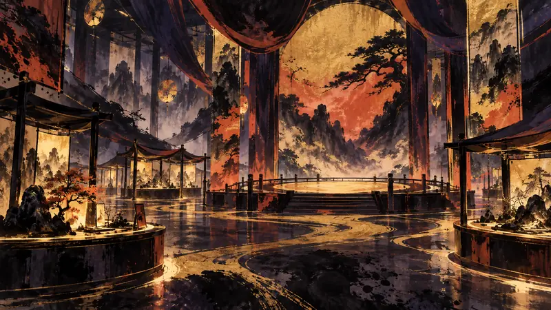

先鸦｜黎明快讯
Nexon Games 将在 2026 TGS 首次公开《Pareidolia》试玩版（译）
玩家能动性：政策如何限制它、产业如何塑造它、叙事设计如何实现它。

《Pareidolia》首次以可试玩的 10 分钟版本登上 2026 东京电玩展，Nexon Games 将游戏的核心空间「黄昏馆」实体化，让玩家从复兴中心负责人兼宿舍管理员的身份出发，与 Meits 建立联系并处理城市问题。试玩版让玩家组成三人队伍，探索因异常现象成为地城的黄昏馆；玩家可以在即时回合制战斗中预判敌人行动、调整 Meits 的行动顺序，此外还可使用语音识别对话并呼叫角色。作品将于 9 月 17 日至 21 日在幕张展览馆展出，RX Studio 制作人车敏瑞表示，团队希望让异世界与 Meits 更具实感，并持续完善作品。
先鸦观点
十分钟试玩把期待拆成可以亲自判断的片段，玩家不必只靠宣传语言决定是否投入。若语音互动成为核心，玩家仍应保有不开口或跳过互动的权利。新鲜感可以扩大入口，却不能替代对长期玩法的选择。
本段为 AI 产出的观点，自动发布，人工于发布后复核。